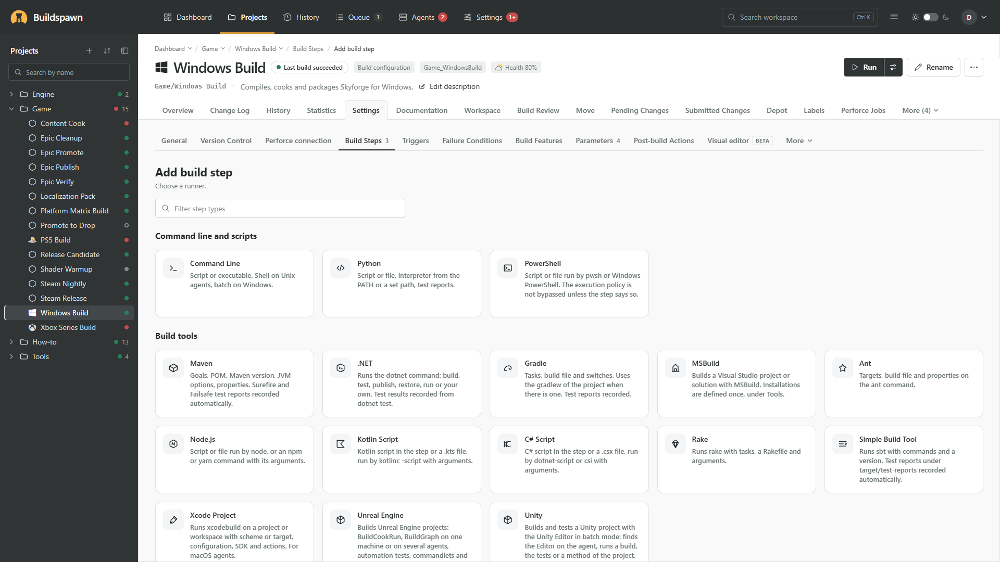
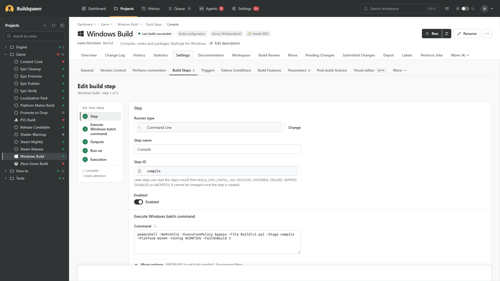

Runners
A runner is the kind of work a step does, such as a command line or a Unity build. You pick one each time you add a build step. Each runner has its own page.
Resolve artifact dependencies is a step for Pipeline scripts, where you write it as resolveArtifactDependencies() inside node. It copies the artifact dependencies of the build configuration into the workspace. The step picker of an ordinary build configuration does not offer it, because a build configuration resolves its artifact dependencies by itself before the first step. See Dependencies.
Add a step
- Open the build configuration and click Settings › Build Steps.
- Click Add build step. The runner picker opens, grouped by kind: Command line and scripts, Build tools, Containers, Tests, Packages, Upload and deploy, Code quality and coverage, Source control and Other.
- Type in Filter step types to find a runner fast, then click its tile.
- Give the step a Step name, such as
Compile. The Step ID is made from the name and cannot change later. - Fill in the runner's fields and click Save.

Each tile says what the runner does and which tool the agent needs.

What every step has
Below the runner's own fields, every step has the same extra settings:
- Working directory, Environment variables, Test reports and Container settings (most runners). See Fields every runner has.
- Outputs, Run on and Files sent back: see Parallel blocks and overrides.
- Execution: when the step runs, conditions and Retry on failure. See The steps list and the step editor and Resume and retry.
Every step also gets a variable BUILD_STEP_STATUS_<ID> that later steps can read: SUCCESS, FAILURE, UNSTABLE, SKIPPED, DISABLED or ABORTED. See Step statuses.
All runners
Command line and scripts
| Runner | What it does |
|---|---|
| Command Line | A script or one program. Shell on Linux and macOS, batch on Windows. |
| PowerShell | A script or .ps1 file, with Windows PowerShell or pwsh. |
| Python | A script, file or module with the Python interpreter. |
Build tools
| Runner | What it does |
|---|---|
| .NET | The dotnet command: build, test, publish, restore, run. |
| MSBuild | Builds a Visual Studio project or solution. |
| Maven | Maven goals, with test reports and optional coverage. |
| Gradle | Gradle tasks, using the project wrapper when there is one. |
| Ant | Ant targets with a build file and properties. |
| Node.js | A script or file with node, or an npm or yarn command. |
| Kotlin Script | A Kotlin script with kotlinc -script. |
| C# Script | A C# script with dotnet-script or csi. |
| Rake | Ruby rake tasks, with RSpec and Cucumber reports. |
| Simple Build Tool | Scala sbt commands. |
| Xcode Project | Builds and tests with xcodebuild on a macOS agent. |
| Unity | Builds and tests a Unity project with the Editor in batch mode. |
| Unreal Engine | BuildCookRun, BuildGraph, automation tests and more. |
Containers
| Runner | What it does |
|---|---|
| Docker | Build an image, push it, or run any docker command. |
| Docker Compose | Start, stop and build compose services. |
Tests
| Runner | What it does |
|---|---|
| NUnit | The NUnit 3 console runner, with failed-first and coverage. |
| VSTest | Tests with vstest.console.exe. |
| MSTest | Tests with the MSTest command line tool. |
Packages
| Runner | What it does |
|---|---|
| NuGet Installer | Restore or install NuGet packages. |
| NuGet Pack | Build a .nupkg. |
| NuGet Publish | Push packages to a feed with a secret key. |
Upload and deploy
| Runner | What it does |
|---|---|
| SSH Exec | Run commands on a remote server. |
| SSH Upload | Copy files over SFTP. |
| FTP Upload | Copy files to an FTP or FTPS server. |
| SMB Upload | Copy files to a Windows or Samba share. |
| Container Deployer | Deploy a WAR or EAR to Tomcat, JBoss or GlassFish. |
| Steam upload and the other Steam steps | Upload a build to Steam. |
Code quality and coverage
| Runner | What it does |
|---|---|
| Code Inspections | Reads SARIF, Checkstyle, PMD and SpotBugs reports, or runs a tool. |
| Duplicates finder | PMD copy-paste detector. |
| FxCop | FxCopCmd on .NET assemblies (Windows only). |
| Inspections (ReSharper) | jb inspectcode on a solution. |
| Duplicates (ReSharper) | dupfinder on a solution. |
| dotCover | Runs a program under dotCover and writes a coverage report. |
Other
| Runner | What it does |
|---|---|
| Execute shell | The classic shell step. |
| Execute Windows batch command | The classic batch step. |
| Run with timeout | Wraps another step with a time limit. |
| Parallel block | Runs groups of steps side by side. See also Matrix mode. |
| Configured build step | The wrapper that holds name, ID, policy, conditions and retry. |
Add-ons you install can add more step types. They appear in the picker under Other.
Runners never pass your fields through a shell, except the Command Line script and the classic shell and batch steps. A secret passed as a command-line argument can be seen by other processes on the agent, so pass secrets through the environment instead. See Secrets.